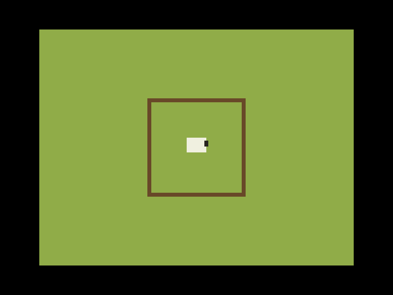

Curse of the Herder — Dreamcast
A port of Curse of the Herder to the Sega Dreamcast, on KallistiOS. Status: boot proof.
The disc, on hardware and desktop emulators
Open herder.cdi in Flycast or Redream, burn it to a CD-R, or load it from a GDEMU. This is what it does today, captured from Flycast:

Try it in the browser experimental
This runs the same disc in Flycast WASM, a browser Dreamcast emulator. It is only a few weeks old and does not yet boot this KallistiOS homebrew; the frame you see may stay black. Desktop Flycast and real hardware run it fine. The player is here so it starts working the moment the browser core can boot homebrew.
Emulator: Flycast WASM by Nick Somers, on Flycast (GPLv2), inside EmulatorJS (GPLv3), redistributed in emulatorjs/ and emulator/ with their sources. No Sega BIOS is included; the emulator boots with its own high-level BIOS. Saves stay in your browser.